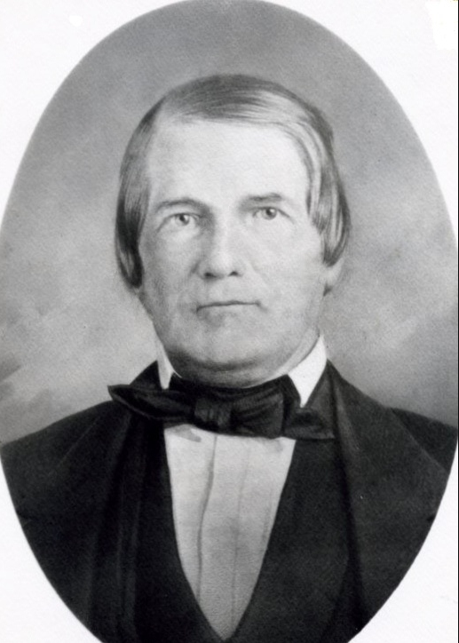

Colonel Benjamin Wilson, 1747-1827
This page is dedicated to all things found relating to Colonel Benjamin Wilson whose military service spanned from pre to post Revolutionary War.
Go Back Veteran List
Go Back Home
- Letter from Benjamin Wilson to George Washington
- Letter from Benjamin Wilson to Benjamin Franklin
- A life summary by the California Society of the Sons of the American Revolution
- Interesting photos and short summary on findagrave.com
- A life summary from geni.com
- Excerpt from The History of Harrison County, West Virginia
- Page for Benjamin Wilson in the West Virginian genealogy page Doddridge County Roots